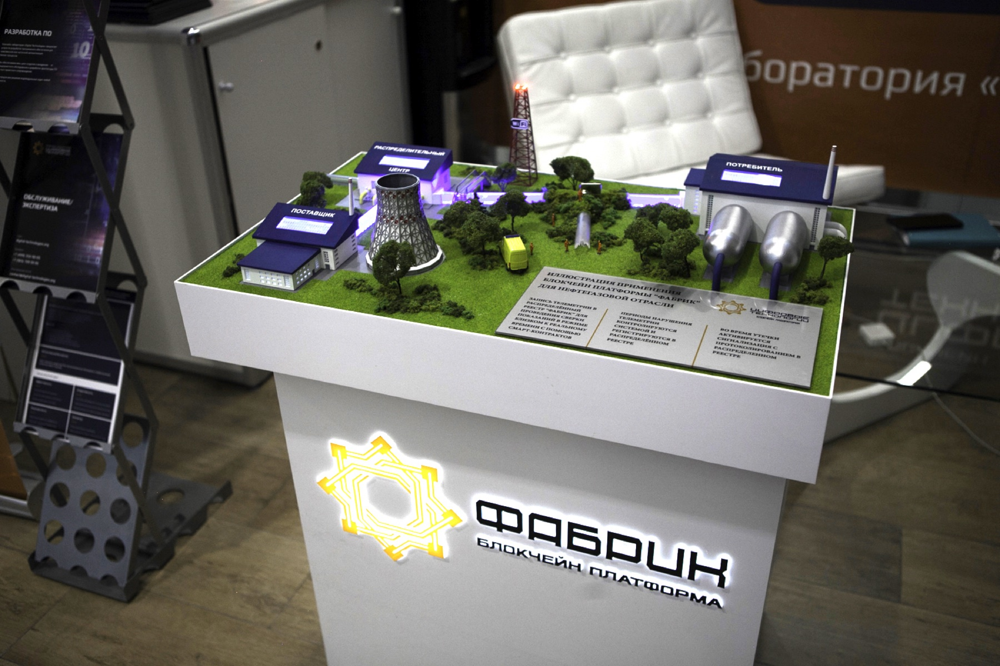
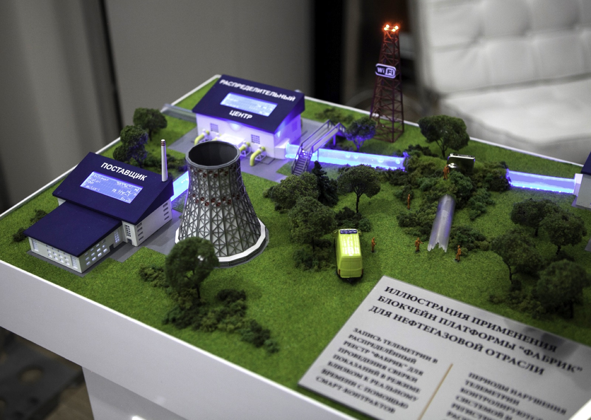
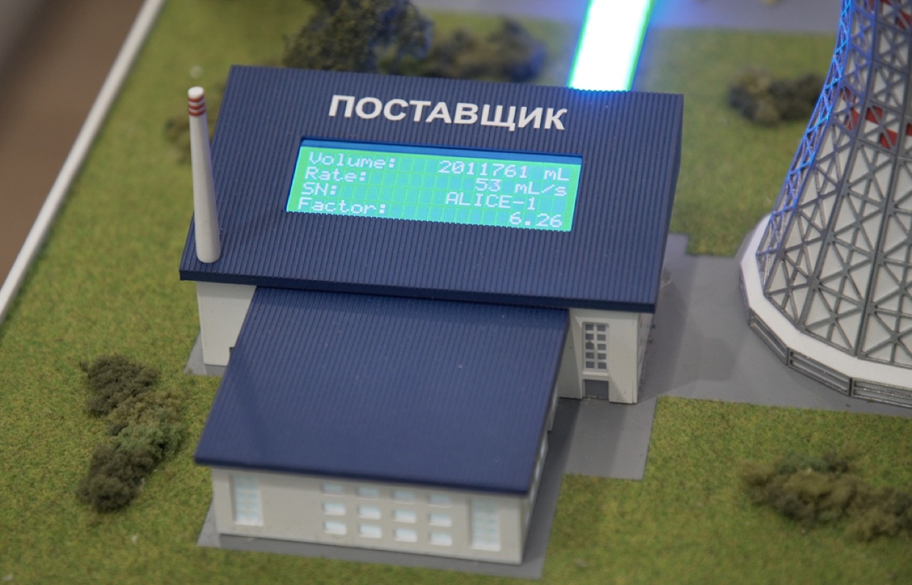
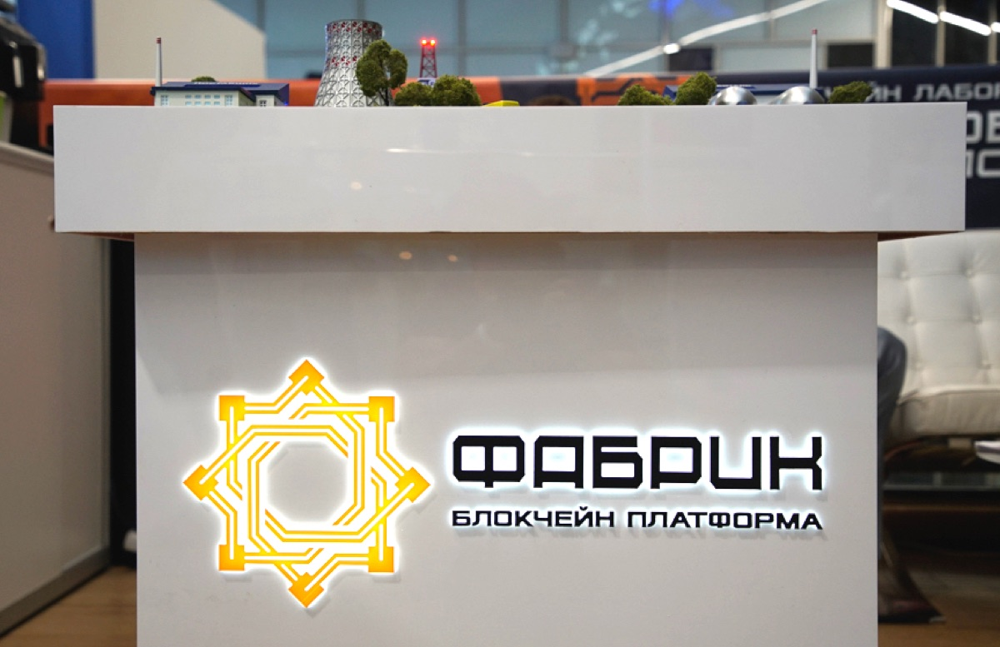

- Организация
- Блокчейн-лаборатория «Цифровые Технологии»
- Роль
- Руководил лабораторией, отвечал за продуктовую и технологическую рамку демонстратора
- Стадия
- Пилотный демонстратор: физический макет, интерфейс и сценарий применения
- Отрасли
- Нефтегазовая и химическая промышленность
- Платформа
- «Фабрик» на базе Hyperledger Fabric
- Криптография
- ГОСТ 34.10-2012 · ГОСТ 34.11-2012 · ГОСТ 28147-89 · VipNet CSP, КС2/КС3 СКЗИ

Контекст
В цепочке поставки сырья спорными становятся не только деньги, но и сам факт: сколько отгружено, что зафиксировали датчики, когда возникла утечка или сбой, кто видел событие и по какой версии данных стороны должны рассчитываться. Если у поставщика, транзита и потребителя разные журналы, каждая спорная ситуация превращается в ручную сверку.
Демонстратор показывал, как распределённый реестр может стать общей проверяемой версией факта: телеметрия, события и расчёты фиксируются в едином неизменяемом журнале, а интерфейс показывает участникам отгруженное и оплаченное сырьё без ручного согласования каждого шага.
Роль в проекте
Я руководил блокчейн-лабораторией «Цифровые Технологии» и отвечал за то, чтобы сложная технологическая тема была собрана в понятный промышленный сценарий. В фокусе была не абстрактная презентация про блокчейн, а связка «физический макет + датчики + интерфейс + блокчейн-логика + смарт-контракты».
Моя зона ответственности — продуктовая и технологическая рамка демонстратора: какой процесс показываем, какие данные фиксируем, где проходит граница между промышленным процессом и доверенным контуром реестра, как объяснить бизнес-ценность для нефтегаза и химии без обещаний промышленного внедрения.
Что было реализовано на макете
- Три точки телеметрии на трубопроводе: Поставщик, Транзит и Потребитель.
- Запись показаний в распределённый реестр в режиме, близком к реальному времени.
- Интерфейс учёта отгруженного и оплаченного сырья.
- Сигнализация при утечках сырья или сбое оборудования.
- Протоколирование событий и периодов нарушения телеметрии.
- Защищённое хранение достоверных данных в рамках исходного технологического описания.
- Оплата через смарт-контракты без ручного участия человека в сценарии демонстрации.


Архитектура демонстратора
Архитектура была собрана как несколько слоёв, каждый из которых понятен промышленному заказчику:
- Физический слой: датчики, водяная помпа, трубопроводный макет, информационные экраны.
- Слой данных: телеметрия, события, периоды нарушения показаний и статусы оборудования.
- Блокчейн-слой: отечественная платформа «Фабрик», созданная на базе Hyperledger Fabric.
- Криптографический слой: ГОСТ-криптография и VipNet CSP в рамках исходного описания платформы.
- Прикладной слой: интерфейс мониторинга, учёт поставки и логика оплаты по смарт-контракту.
Технологическая платформа
В проекте использовалась отечественная блокчейн-платформа «Фабрик». По исходному описанию, за основу была взята технология Hyperledger Fabric, после чего платформа дорабатывалась под отечественную криптографию и нормативные требования.
В исходных материалах указаны ГОСТ 34.10-2012, ГОСТ 34.11-2012, ГОСТ 28147-89, приказ ФСБ России № 416, требования ФСТЭК РФ № 489 от 31.08.2010, Указ Президента РФ № 646 от 05.12.2016, а также использование сертифицированных криптографических решений VipNet CSP классов защиты КС2/КС3 СКЗИ. Публичная формулировка здесь ограничена этим исходным описанием и не расширяет его до утверждения о полностью сертифицированной промышленной платформе.

Почему это важно для нефтегаза и химии
- Прослеживаемость поставки: участники видят единый журнал измерений и событий.
- Доверие к данным: телеметрия не остаётся набором разрозненных локальных логов.
- Аудит инцидентов: утечки, сбои и периоды нарушения телеметрии фиксируются как события.
- Автоматизация расчётов: оплата может запускаться логикой смарт-контракта на основе зафиксированных данных.
- Снижение спорности: поставщик, транзит и потребитель сверяются с одной версией факта.
Статус
Подтверждённый результат — лабораторный пилотный демонстратор: физический макет, сценарий применения, интерфейс, телеметрический контур, блокчейн-логика и демонстрация оплаты через смарт-контракт. Отдельного подтверждения промышленной эксплуатации или внедрения у нефтегазовой компании в материалах для этой страницы нет, поэтому такой результат здесь не заявляется.
Что демонстрирует кейс
- Способность руководить технологической лабораторией, где нужно собрать продуктовую, инженерную и демонстрационную части в один сценарий.
- Понимание enterprise-архитектуры на стыке промышленного IoT, распределённых реестров, криптографии и интерфейсов для принятия решений.
- Умение объяснять сложную технологию через физический прототип, а не только через схемы и обещания.
- Редакторскую честность: кейс подан как пилотный демонстратор, без неподтверждённых заявлений о production-внедрении.